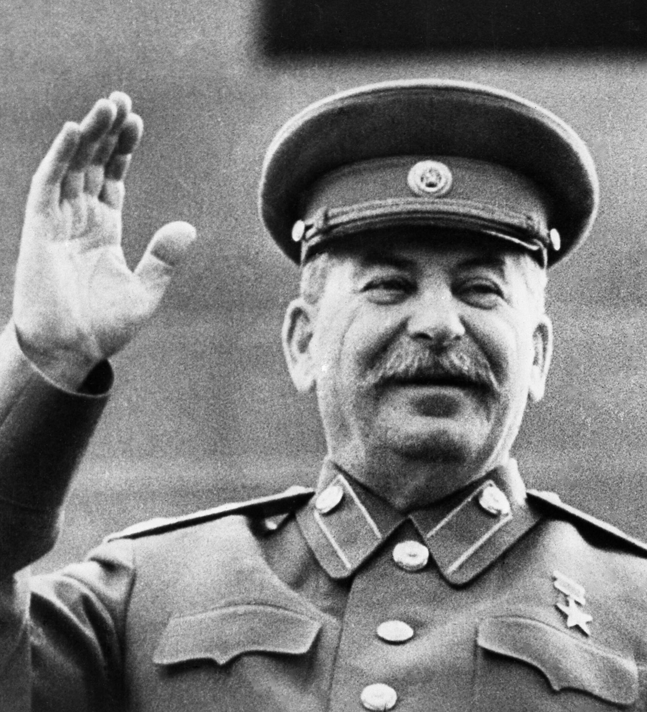

le communisme de staline c koi
le communisme de staline c koi
Le P.I.C.O ou le "Partie International Comuniste Ouvert". Ceci est un parti ou notre waifu est notre dieu vénérer est Picopico
nos conviction sont de raliée tous le monde a notre waifu et cela a deja commencer nous habitons en ###### en ######
comme dit dans la presentation nous voulions que tous le monde regoins notre cause de vénérer le Picopico.Nous avons des règles et une hierarchie bien organisée, nous quand vous arriver vous serrez recrue progresser dans cette hierarchie et vous aurrez plus de place.
le communisme de staline a un très bon systeme carséral appeler le goulag. le goulag est un lieu où vous pouvez reflechir sur vos action plus ou moins respectable entre 2 scéance de torture organiser par les expères les chef des SS eux même. les SS veille au bon fonctionnement de la torture au goulag. si vous parmez de la convention de genève nous reponderons qu'on la lu et réaranger a notre sauce. nous voulions le bien de notre peuple c'est pourquoi nous avions demander a nos escl... heuu concytoien si le partie en place vous conviens. ils ont tous repondu "oui"
c'est avec fierter que nous acceuillons a goul.. bras ouvert nos nouveau concitoyen.Bien sur le partage est au centre de nos idée c'est pourquoi les utilisateur de notre reseaux internet est doteé de partage de donnée, c'est pour garentir la secutité de nos citoyens pour les eloigné de toute menace capitalisme bheuuuuuuuu.Bien sur nous respectons la democratie en permetant au citoyen de voter librent sous surveillance des SS. Ils sont performant en arretant plus de 1 000 de criminel en voulant promoivoir le "capitalisme"
nous avons une hierarchie simple mais complet: les arrivant sont nommer recrue pour les distainger et les aider a comprendre notre regime non-violant: ensuite si vous avez fait sufisament vos preuve nous vous engagons dans la SS il assure la securiter au sein de notre pays ##### en ##### puis si vous faite vos preuve vous passerez chef des SS se sera la meme chose que les SS mais vous pourrez entretenir des conversation avec le presidant et ces ministre sur la securiter interieur mais si on decuvre que vous declasiffier des document vous serez comdamer a mort choississer bien avant d'etre chef des SS vous pourrez commender les SS mais attention on vous voit vous voulez faire de l'espionnage alors le role du KGB est pour vous votre role est de espionner les pays voisin tel que ###### ou ##### vous ferez le tour du monde tous frai payer mais bon c pas du 4* quand meme mais comme pour les SS vous avez un chef du KGB qui est encore plus proche du gouvernement, vos aurrez h24 des nouvelle de nos espion dans les pays. attenion ce si vous declassifer des dossier la mort vous attend au tournant(litéralement) après nous montons dans la sphère du governement avec les dodolphe qui donne les directive a chef des SS il peuvent envoyer au goulag des gens apres débat nous acordons une grande confiance au Dodolphe donc si vous nous trahissé attention on veut quoi:
aussi dit dans le partie nous addérons au parti de notre petit père des peuples: staline effectivement nous aderons au communisme de staline.--------------------------------------------------------------->
le communisme de staline: c koi?
notre hierarchie:
vu que nous somme un parti grandissant nous prenons soin de nos recrue il sont au nombre de 4
vos serez chargée de gardée la securiter du pays en envoyant au goulag (et pas dans des chambres) nos opposant politque vous etes un peu comme la police mais la violance policière est autoriser
acctellement il y a 8 SS pour garder 27 citoyen
atuellement le poste est a pourvoir attention il y a de la concurance
vu que ce poste est nouveau on a pas beucoup de personnel du KGB
nous avons qelque heureux elu nom de code dorlisse
on en compte 4 il se nomme: